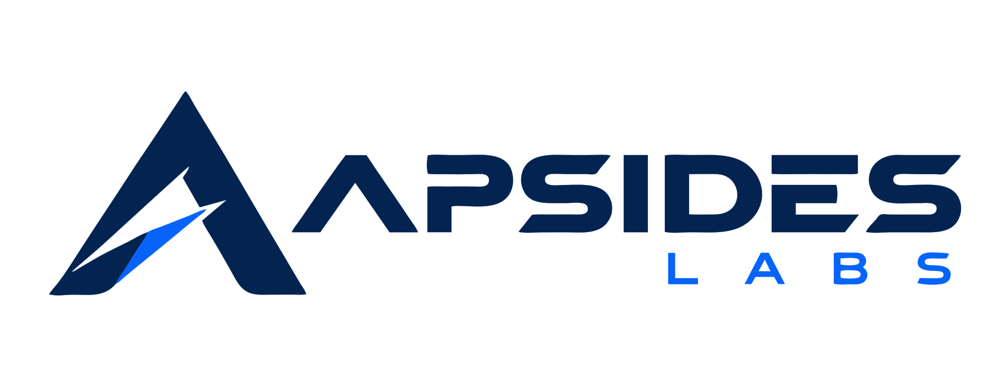

We build software that teaches.
Apsides Labs is an independent research and engineering studio. We build thoughtful software, intelligent learning systems, and technology products through research, engineering and experimentation.

Our approach
We start from a simple belief: the best learning software works for the people who have the least — the slowest connection, the oldest device, the smallest budget. That constraint is not a limitation to work around; it is the design brief.
So we build offline-first, dependency-free, and CPU-only wherever we can. If a lesson can be learned without a network, it should be. If a model can run on the hardware someone already owns, it should. The result is software that is faster, cheaper, more private, and more durable than the alternative.
Research, engineering, experimentation
Every product we ship began as an experiment. We research a problem — how people learn a script, how to run speech models without a GPU, how to decompose a goal into a roadmap — then engineer it into something real, then put it in front of learners and watch what happens. What survives that loop becomes a product; what doesn't becomes a lesson.
Who builds it
Apsides Labs is the studio behind every product on this site. The work is designed, engineered and maintained by the Apsides Labs team, and published openly — most of it under permissive licences, with the source on GitHub. This blog is where we write down what we learn along the way.
Offline-first
The core experience works with no connection at all. The network is an enhancement, never a requirement.
Constrained by default
Built for CPU-only hosts and modest devices, so it runs everywhere — not just on the newest hardware.
Open where we can
Permissive licences, readable source, and no lock-in. Learning tools should outlive the companies that make them.
Built to last
No framework churn, no build step where we can avoid it. Static files and standard web platform features endure.
Our products
Public, open products from the studio.
Luitra
A free, offline, dependency-free platform for learning Assamese — lessons, grammar, verb tables, script, dictionary, phrases and a translator.
Visit Luitra →SikBodo
A free, offline platform for learning Bodo — graded lessons, a 348-word dictionary, dialogues, reading and an interactive practice arena.
Visit SikBodo →Mindtrace
A reading library for psychology, relationships and human behaviour — 237 topics across 14 modules, a facts library and an interactive concept map.
Visit Mindtrace →Work with us, or follow along
We publish everything we learn. Read the blog, subscribe by RSS, or browse the source on GitHub.